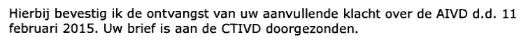

Dokaz · Pismo
Ministarstvo unutrašnjih poslova Giltayu, 2. marta 2015.
Odlomak
„Ovim potvrđujem prijem Vaše dopunske pritužbe protiv AIVD-a od 11. februara 2015. Vaše pismo proslijeđeno je CTIVD-u.“ Stranica 2 datoteke, tekst pisma ministarstva od 2. marta 2015. Prijevod s nizozemskog; izvorni tekst naveden je ispod.
Izvorni tekst
“Hierbij bevestig ik de ontvangst van uw aanvullende klacht over de AIVD d.d. 11 februari 2015. Uw brief is aan de CTIVD doorgezonden.”

Zašto je ovaj dokument važan
U ovom pismu od 2. marta 2015. Ministarstvo unutrašnjih poslova potvrđuje prijem dopunske pritužbe protiv Opće obavještajne i sigurnosne službe (AIVD) i javlja da je pritužba proslijeđena CTIVD-u. Pismo samog autora od 11. februara 2015., sa zahtjevom da se istraži cijela afera opisana u knjizi De doofpotgeneraal, čini prvu stranicu iste datoteke. Esej navodi da se ministar Ronald Plasterk odbio suštinski osvrnuti na knjigu, ali da je na zahtjev autora pokrenuta službena istraga CTIVD-a, Komisije za nadzor obavještajnih i sigurnosnih službi. Ministar je CTIVD-u naložio istragu i, kako esej primjećuje, povukao taj nalog nakon četrdeset šest dana, 17. aprila 2015.
Porijeklo
- Dokument
- Pismo, jedna stranica
- Pošiljalac
- Ministarstvo unutrašnjih poslova i odnosa unutar Kraljevine, Hag, u ime ministra potpisao generalni sekretar Richard van Zwol
- Primalac
- E. Giltay, Hag
- Datum
- 2. marta 2015.
- Broj
- 8524b7b7-or1-1.0
- Predmet
- Vaša pritužba
- Jezik
- Nizozemski
- Također u ovoj datoteci
- Edwin Giltay ministru Ronaldu Plasterku, 11. februara 2015., pismo na koje ovaj dopis odgovara, uvršteno kao stranica 1
- Vidi također
- Ministarstvo unutrašnjih poslova Giltayu, 5. februara 2015.Ministarstvo unutrašnjih poslova Giltayu, 17. aprila 2015.
Citirano u: eseju „Zabrana pala, knjiga opstala“ u poglavlju (6) „Tri afere“.
Stranica dokaza: https://
Dokument: https://
Posljednja izmjena 9. septembra 2026., pristupljeno 3. oktobra 2026.

Ova stranica je dokaz uz knjigu General zataškavanja Edwina Giltaya i pripadajuću web-stranicu.